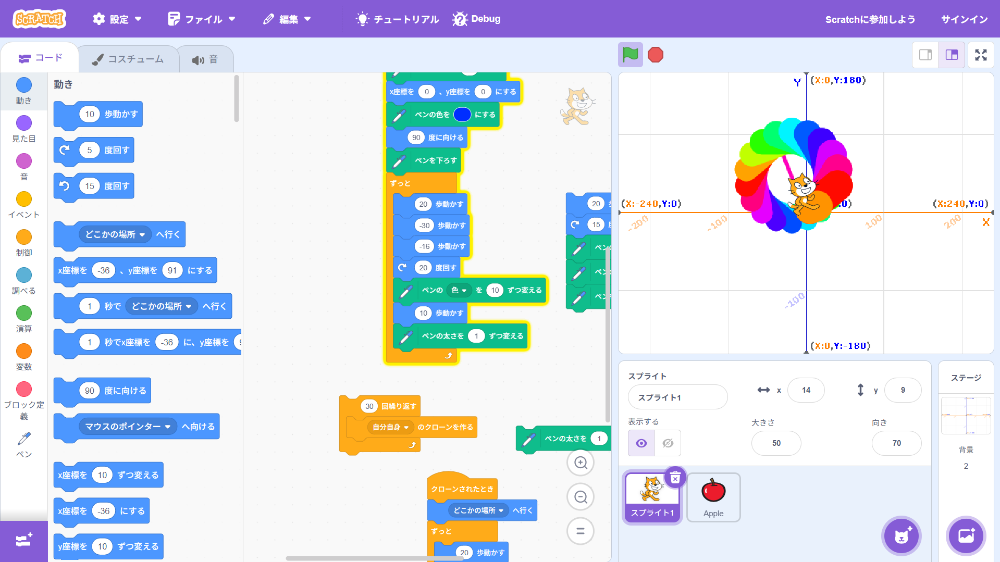
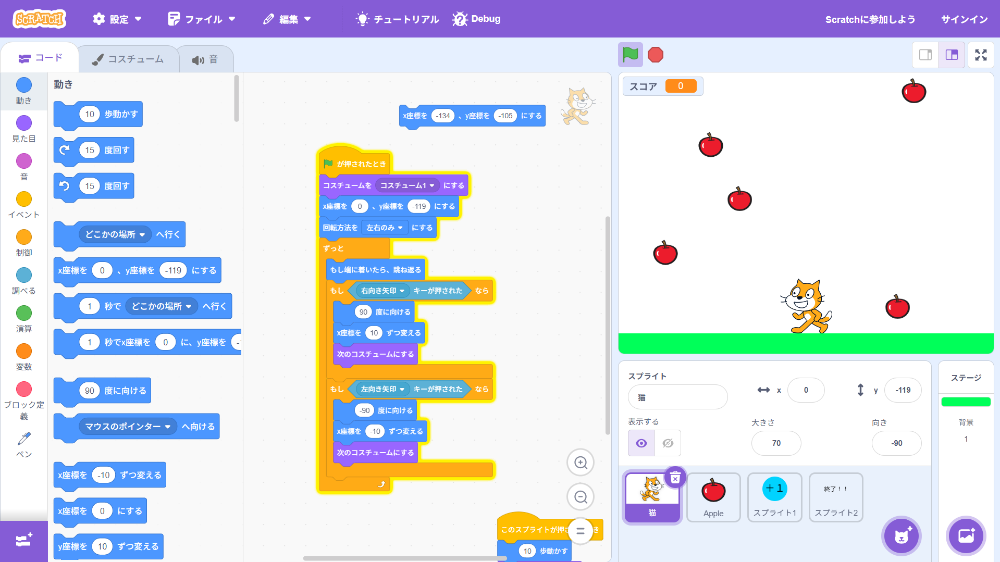

1週目のレポート ： 公大高専１年実習I-1
2a班16番 ニックネーム
第1週目
1-1 サイエンスアート

1.内容
scratchを使い、ペンを用いて自分なりの模様を描いた。。
2.感想
プログラミングは子供のころからしていたので割と簡単で楽しかった。だがペンの機能はあまり使ったことがなかったので、 新しい経験でとても面白かったし、プログラミングだけでこんなにきれいな模様を描けると知って驚いた。
1-2 ゲーム

1.内容
りんごや猫にプログラミングをして簡単なゲームを作った。
2.感想
僕の得意なゲームを作るプログラミングだったのでとても楽しかった。また、休み時間に自分の作ったゲームを友達とプレイし合うのも面白かった。
1-3 ホームページ作成
私のホームページ
1.内容
githubを使って自分のwebサイト（ホームページ）を作ったりした。
2.感想
githubは使ったことがなかったので、新しいことに挑戦するのが難しかったがよい経験になった。おそらく社会に出ても使ったりする機会があると思うので、しっかり学んでいきたいと思った。
各ページへのリンク
1週目のレポート
2週目のレポート
3週目のレポート
私のホームページ